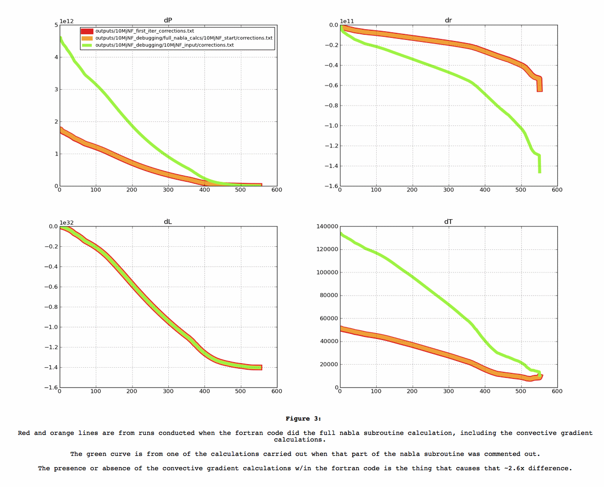

Date & Time: Jan. 8, 2013
Location: Campus
Computing context: Macho Mac
Continuing from last time:
Figure out where I left off last time
The dX profiles calculated by Peter's code changed by a factor of ~2.6 between two runs, and I couldn't figure out why (see Figure 1).
This was an issue, because I though I'd gotten Helena to produce dX profiles that agreed w/ his code (after fixing the outermost boundary condition discrepancies b/w the codes)
I need to be able to do a full run-to-convergence of a 10 Mjup model in both codes as the next step, and suddenly his code's behavior seems to have changed. So, can't verify if Helena's now working correctly until I fix whatever's now wrong w/ Peter's code
And then start up again from there!
I think my next step, at the time I stopped, was to go onto GitHub and compare the versions of Peter's code that I had archived there to track down the change responsible for the error.
Today, I spent most of my time figuring out how to set up an OpenOffice document template that would:
keep lists, outlines, and captions in Courier 10pt, and
that would also format graphics such that they'd show up correctly in the exported html files.
Can't figure out how to set this in a template, but can do it manually by setting the anchors on both the frame and the picture to "Anchor as character."
Spent lots of time trying to figure out how to set up a macro to automate the process, with no luck.
Today's Work:
Which version of the Fortran code did I use to create the 10MjNF_corrections.txt values?
What input file/values did I use to create the 10MjNF_corrections.txt values?
Which code version and input file did I use to create the temp_corr.txt values?
Did I use the dTime > 0, or the dTime = 0 input for that?
To figure this out, running cdeg_debug2 with each of the following input files:
10MjNF.start
10MjNF_nonzero_dTime.start
atmosProbe.start
10MjNF_no_conv_nab.start
10MjupCDEGdebug.start
cdeg.start
Results stored in /Users/laurel/Desktop/Research/BodenheimerCode/UnalteredCode/outputs/10MjNF_debugging
Parse and plot all of these results in python, and see if/how they differ. (If any of them give the old, "right" dX results.)
How did I parse these fortran output files before? Surely not by hand??
This time, I extracted the corrections information with the following command:
grep corr: *.txt | sed 's/corr:/ /g' > corrections.txt
the 's/corr:/ /g' replaces 'corr:' with a space, effectively removing the string from those lines.
Did I have a python script in place to read these files in and plot them?
I do now. It's called "compare_several_Peter_dX_results.py".
Results: see Figure 2
It looks like the outer boundary conds for P & T, and the inner boundary conds for L and r remain the same in all the datasets plotted in Figure 2.
I think this indicates that all the runs are reading in the same initial model, and that their atmos calculations are operating identically.
So, I think it's something in the Henyey subroutine
that's going haywire.
It might also be due to the fact that I commented out part of that nabla subroutine... Let's check that.
Yep, that's it. See Figure 3.
Figured out what was causing that ~2.6 factor difference. You need the full convective gradient calculation operating in the nabla subroutine. Don't comment it out if you want this thing to work.

Let's do a straight comparison b/w input files from
10MjNF_first_iter_corrections.txt and 10MjNF...
Wait, let's also try running those inputs thru cdeg_debug
(instead of cdeg_debug2), and see what happens.
Now that I've fixed the fortran code, the next step is to compare the dX profiles it calculates when dTime > 0 to the ones Helena calculates for the same non-zero dTime value. Start with this tomorrow.